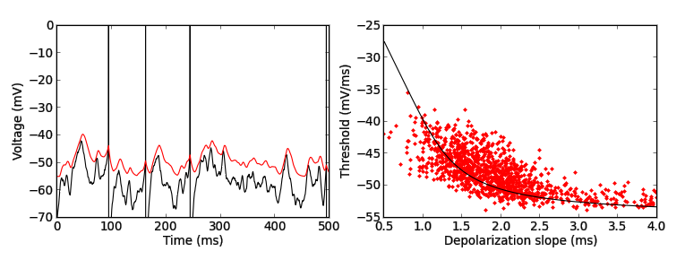

For the paper: Platkiewicz J, Brette R (2011) Impact of fast sodium channel inactivation on spike threshold dynamics and synaptic integration. PLoS Comput Biol 7:e1001129-78 Abstract: Neurons spike when their membrane potential exceeds a threshold value. In central neurons, the spike threshold is not constant but depends on the stimulation. Thus, input-output properties of neurons depend both on the effect of presynaptic spikes on the membrane potential and on the dynamics of the spike threshold. Among the possible mechanisms that may modulate the threshold, one strong candidate is Na channel inactivation, because it specifically impacts spike initiation without affecting the membrane potential. We collected voltage-clamp data from the literature and we found, based on a theoretical criterion, that the properties of Na inactivation could indeed cause substantial threshold variability by itself. By analyzing simple neuron models with fast Na inactivation (one channel subtype), we found that the spike threshold is correlated with the mean membrane potential and negatively correlated with the preceding depolarization slope, consistent with experiments. We then analyzed the impact of threshold dynamics on synaptic integration. The difference between the postsynaptic potential (PSP) and the dynamic threshold in response to a presynaptic spike defines an effective PSP. When the neuron is sufficiently depolarized, this effective PSP is briefer than the PSP. This mechanism regulates the temporal window of synaptic integration in an adaptive way. Finally, we discuss the role of other potential mechanisms. Distal spike initiation, channel noise and Na activation dynamics cannot account for the observed negative slope-threshold relationship, while adaptive conductances (e.g. K+) and Na inactivation can. We conclude that Na inactivation is a metabolically efficient mechanism to control the temporal resolution of synaptic integration. Brian simulator models are available at this web page: http://briansimulator.org/docs/examples-frompapers_Platkiewicz_Brette_2011.html The simulation generates images similar to Fig. 5E,F in the paper:  This simulation requires Brian which can be downloaded and installed from the instructions available at http://www.briansimulator.org/ For support on installing and using Brian simulations there is a support group at https://groups.google.com/group/briansupport.